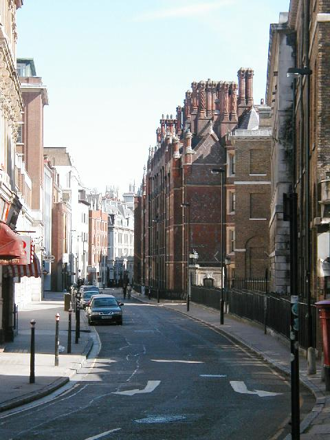
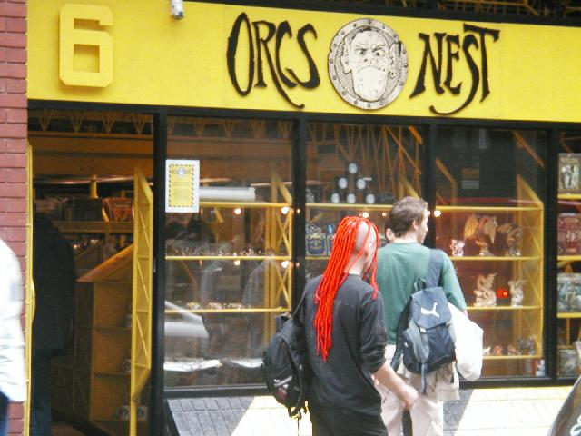
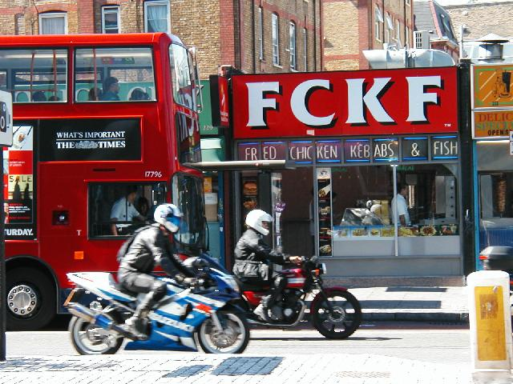
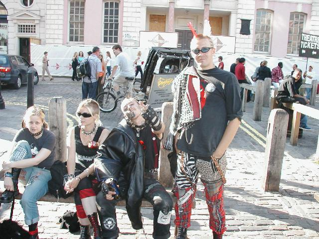
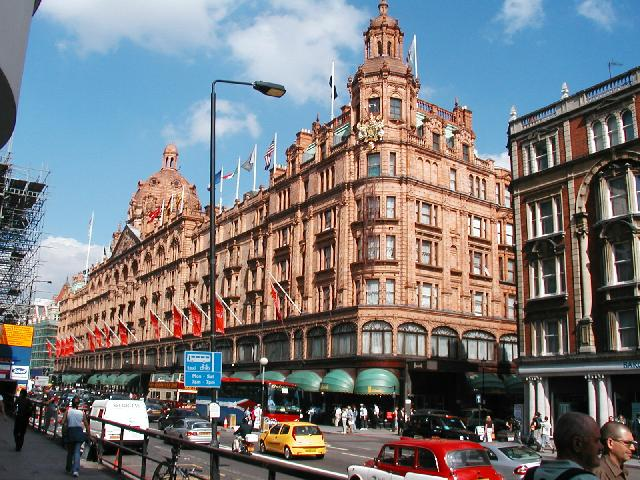
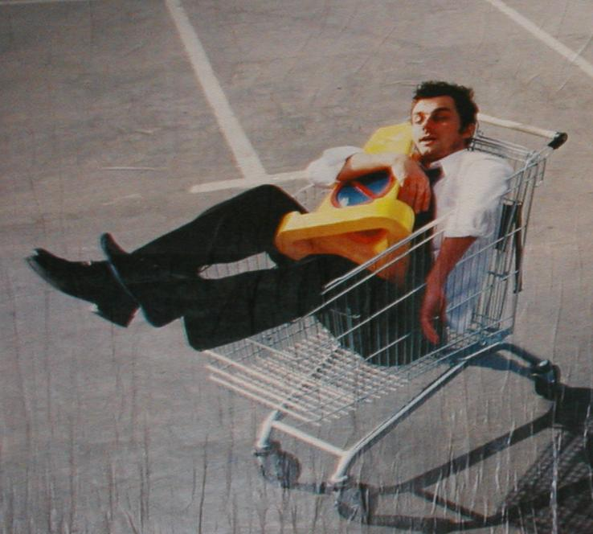
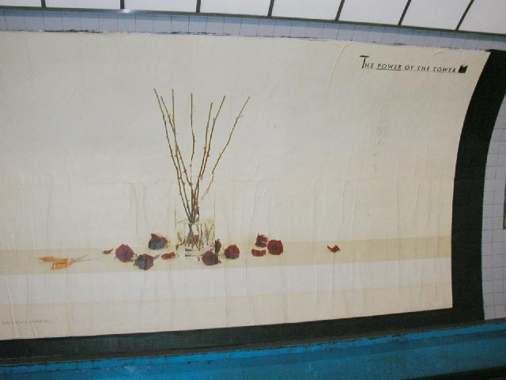
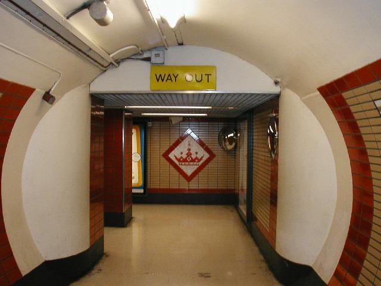
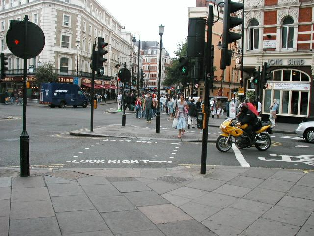
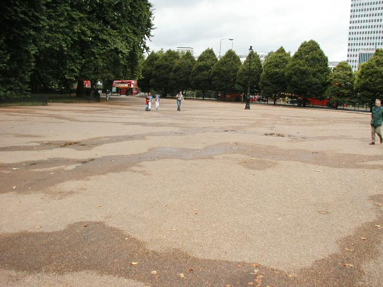

Ethos

Street scene
Cheltenham Road

D&D in the UK
In the UK you appear in character to go to the
store. I was the only customer without leather pants and buckled
kneeboots. In the States, we're hard put to stay in character while
playing. Shame on us.

Paki wit
The area north of the City is London's funk zone.

Professional punks.
Photograph them for a fee in Covent Gardens. The only
other mohawk I saw was on a Paki. Things have moved on. Note the
"granny mohawk"--the guy wouldn't be caught dead looking like this off
the job.
Covent Gardens is where I encountered the Bird
Man.
The Bird Man was a gilded mime with (as far as I could tell) as classic
New York morose pug face. When he opened his mouth, fluent
streams of birdsong emerged. I tried to photograph him in
vain--for 20 min he always managed to be turned the wrong way. Finally
he came over to expostulate "It is very wrong to photograph me!" in a
Bengali accent. In my best German accent I replied "But you are
very talented!" Whereupon he threatened to confiscate the camera.
Two days later I saw him doing acrobatics, sans gilding and
accent. A man after my own heart.

The Abbey of St. Consumer.
Harrods puts the Hall of Luxury (expensive jewelry) next to a
fishmarket. For tea: orange mousse over a macaroon with a marzipan
center, the whole coated in milk chocolate.

British ads are more clever
This one is marketing J02, a fruit drink, not as healthful,
but as an alternative for the overindulgent. Another JO2 ad reads
"Ever mutter the words: I didn't, did I?"

fs
And more subtle.

Tribute to British eccentricity?
Or reassurance for the perplexed that there is one?

Yanks. Proper
lemmings, aren't they?

Hyde Park's
Speaker's Corner
Arrived with diatribe in
mind. The pigeons were disinterested. This was
mid-afternoon on a Friday, where was the action? My diatribe herewith:
An explanation is owned the British people concerning recent press
reports that the U.S. blames Britain for instigating the war in Iraq
thru faulty intelligence. You should know that no one of any
political persuasion holds that view. Admirers of President. Bush
blame the CIA, whose job it is to evaluate intelligence, including
intelligence from friendly sources. Detractors of Pretender Bush
know that he would have his war whether or no, and knowinly used false
information for lack of a convincing casus
belli. Please be assured that it is safe to visit the U.S.
without having the whole mess laid in your lap.